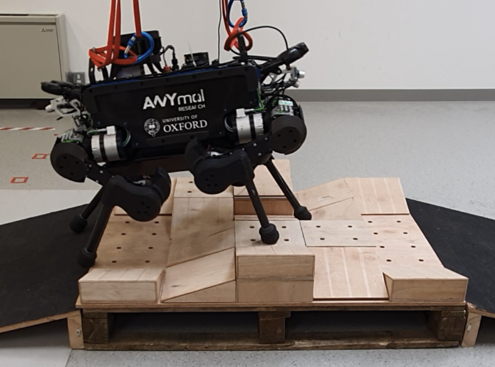
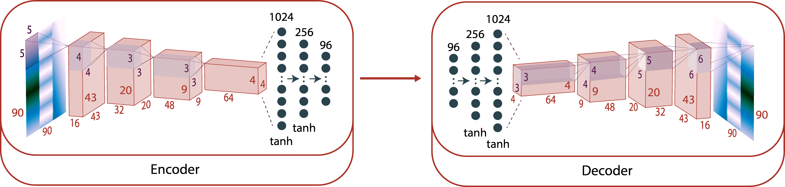
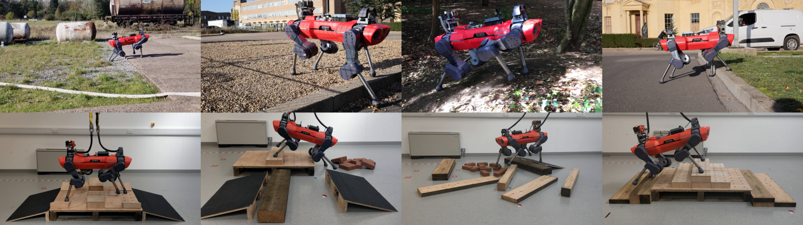

RLOC: Terrain-Aware Legged Locomotion using Reinforcement Learning and Optimal Control
论文信息
- 作者：Siddhant Gangapurwala, Mathieu Geisert, Romeo Orsolino, Maurice Fallon, Ioannis Havoutis
- 机构：牛津大学机器人研究所（Oxford Robotics Institute）
- 发表：arXiv:2012.03094v3 (2022)
- 关键词：四足机器人、强化学习、最优控制、地形感知、运动规划
📖 TL;DR（一句话总结）
本文提出 RLOC 框架：让四足机器人（ANYmal B/C）像人一样"看地形走路"——用强化学习决定踩哪里，用最优控制执行动作，两者结合实现在楼梯、斜坡、碎石等复杂地形上的稳健行走。
🎯 问题背景：为什么四足机器人走路这么难？
想象你闭着眼睛在崎岖山路上走路——几乎不可能。机器人也一样，要在复杂地形行走，需要同时解决三大难题：
graph TD
A[四足机器人行走的三大难题] --> B[哪里可以踩？\n地形感知+步态规划]
A --> C[怎么踩？\n运动控制+平衡维持]
A --> D[出了意外怎么办？\n外力扰动+滑步恢复]
B --> E[本文用RL学习解决]
C --> F[本文用最优控制解决]
D --> G[本文用恢复策略解决]
传统方法要么计算太慢（全身轨迹优化），要么太依赖精确模型（MPC），要么只会走平地（大多数RL方法）。RLOC 的创新在于把 RL 的感知决策能力和最优控制的精确执行能力结合起来。
🤖 实验平台：ANYmal 四足机器人

| 属性 | ANYmal B | ANYmal C |
|---|---|---|
| 重量 | 30 kg | 50 kg |
| 关节数 | 12 | 12 |
| 主要特点 | 工业检测用，大工作空间 | 更重、更高负载 |
| 在本文中的作用 | 训练平台 | 零样本迁移测试 |
🔑 关键结论：在 ANYmal B 上训练的策略，不需要任何重新训练，直接在 ANYmal C 上也能工作！这证明了方法的通用性。
🏗️ RLOC 系统总览
RLOC（Reinforcement Learning + Optimal Control）由 4 个模块 组成：
graph LR
SENSOR[传感器输入\n本体感知+外感知] --> MAP[地形编码器\nElevation Map Encoder]
MAP --> FP[步态规划器\nFootstep Planner RL]
FP -->|期望落脚点| MC[运动控制器\nMotion Controller OC]
MC -->|参考轨迹| DAT[域自适应追踪器\nDomain Adaptive Tracker RL]
DAT -->|修正力矩| ROBOT[机器人执行]
ROBOT -->|异常状态?| RC[恢复控制器\nRecovery Controller RL]
RC -->|关节命令| ROBOT
| 模块 | 运行频率 | 作用 |
|---|---|---|
| 地形编码器 | 按需 | 将高程图压缩为96维特征向量 |
| 步态规划器（RL） | 每步态周期更新 | 决定四只脚落在哪里 |
| 运动控制器（OC） | 400 Hz | 规划身体轨迹并执行整体控制 |
| 域自适应追踪器（RL） | 400 Hz | 补偿建模误差，输出修正力矩 |
| 恢复控制器（RL） | 400 Hz（仅失稳时激活） | 机器人摔倒或失稳时救场 |
📐 数学基础：系统建模
机器人状态表示
四足机器人被建模为一个浮动基座（floating base） 加上四条腿：
$$ q = \begin{bmatrix} {}^W r_{WB} \ q_{WB} \ q_j \end{bmatrix} \in SE(3) \times \mathbb{R}^{n_j} $$
- ({}^W r_{WB} \in \mathbb{R}^3)：机器人基座在世界坐标系中的位置（x, y, z）
- (q_{WB} \in SO(3))：基座的姿态（用四元数表示旋转）
- (q_j \in \mathbb{R}^{12})：12 个关节的角度
关节控制：阻抗控制
机器人最终通过阻抗控制（impedance control）驱动关节：
$$ \tau_j = K_p(q_j^* - q_j) + K_d(\dot{q}_j^* - \dot{q}j) + \tau{jFF} $$
通俗理解：就像弹簧-阻尼系统。(K_p) 是弹簧刚度（偏差越大、力越大），(K_d) 是阻尼（速度越快、阻力越大），(\tau_{jFF}) 是前馈力矩（提前知道要做什么就先加上去）。
🗺️ 模块1：地形编码器（Elevation Map Encoder）
什么是高程图？
机器人用深度相机扫描周围地形，生成一张 91×91 像素的高程图（覆盖 1.8m × 1.8m 范围），记录每个点的高度。
去噪自编码器

原始高程图可能有噪声、遮挡，所以用去噪卷积自编码器处理：
graph LR
A[原始高程图 91×91] -->|加入噪声| B[含噪高程图]
B -->|编码器 E| C[潜在特征 Z: 96维]
C -->|解码器 D| D[重建高程图]
D -.->|最小化重建误差| B
加入的噪声包括：
- 高斯噪声：模拟传感器误差
- 椒盐噪声：模拟随机错误测量
- 模糊卷积：模拟边缘模糊（楼梯边缘会变模糊）
💡 为什么这么做？ 真实机器人的传感器数据很脏，训练时加噪声让网络学会"无论输入多差都能提取关键特征"。
👣 模块2：步态规划器（Footstep Planner）
这是 RLOC 的"大脑"，用 强化学习 学习：给定地形和速度指令，四只脚该落在哪里。
状态空间 (s_f \in \mathbb{R}^{204})
| 状态分量 | 维度 | 含义 |
|---|---|---|
| (s_R)：基座方向 | 3 | 机器人身体朝向 |
| (s_v)：速度 | 6 | 线速度+角速度 |
| (s_j)：关节历史 | 96 | 过去几帧的关节位置和速度 |
| (s_c)：速度指令 | 3 | 用户期望的前进/侧移/转向速度 |
| (s_M)：地形特征 | 96 | 编码器输出的地形特征向量 |
动作空间 (a_f \in \mathbb{R}^8)
输出四只脚的 水平落脚位置（每脚2个坐标 = 4×2 = 8维）。
奖励函数
奖励分为运行奖励（每个控制步）和最终奖励（每次步态完成后）：
$$ r_F = r_F^f + \frac{1}{(n+1)t - (n_t+1)} \sum{t=n_t+1}^{(n+1)t} r{Ft}^r $$
运行奖励包括： $$ r_{Ft}^r = 8r_v - 0.016 d_f r_\tau - 2.5 d_f r_\mu + 4r_m $$
| 奖励项 | 含义 | 方向 |
|---|---|---|
| (r_v)：速度追踪奖励 | 实际速度 vs 期望速度 | ↑ 越接近越好 |
| (r_\tau)：力矩惩罚 | 关节力矩大小 | ↓ 越小越省能量 |
| (r_\mu)：滑步惩罚 | 支撑脚是否滑动 | ↓ 不能滑 |
| (r_m)：稳定裕度奖励 | 机器人的动态稳定性 | ↑ 越稳越好 |
训练算法：SAC（Soft Actor-Critic）
用 SAC 训练，相比 PPO/TRPO 在这种低频决策环境中更样本高效（只需 32 小时训练，而同类方法需要 454 小时！）。
⚙️ 模块3：运动控制器（Motion Controller）
运动控制器是系统的"手脚"——接收步态规划器给出的落脚点，生成具体的关节轨迹并执行。
工作流程
sequenceDiagram
participant FP as 步态规划器
participant MC as 运动控制器
participant WBC as 全身控制器
participant Robot as 机器人
FP->>MC: 期望落脚点 r*_F（每步态更新）
MC->>MC: 解非线性优化，生成CoM轨迹
MC->>WBC: 参考CoM和脚部运动计划
WBC->>WBC: 层次QP优化
WBC->>Robot: 前馈力矩 τ_jFF + 关节位置速度指令
CoM轨迹参数化：五次样条
机器人重心（CoM）的运动用五次多项式样条描述：
$$ x(t) = \alpha_{j5}^x t^5 + \alpha_{j4}^x t^4 + \alpha_{j3}^x t^3 + \alpha_{j2}^x t^2 + \alpha_{j1}^x t + \alpha_{j0}^x $$
为什么用五次？ 五次多项式可以同时约束位置、速度、加速度的起止条件，轨迹更平滑。
🔧 模块4：域自适应追踪器（Domain Adaptive Tracker）
问题：训练时用 ANYmal B 的模型，真实机器人的参数（质量、摩擦等）可能不同。
解决方案：训练一个 RL 策略，学习补偿力矩 (\delta\tau_{jFF})，让实际跟踪效果接近理想：
$$ \tau_j = K_p(q_j^* - q_j) + K_d(\dot{q}j^* - \dot{q}j) + \underbrace{\tau{jFF}}{\text{运动控制器输出}} + \underbrace{\delta\tau_{jFF}}_{\text{自适应补偿}} $$
训练时进行大量域随机化（domain randomization）：随机改变机器人质量、摩擦系数、关节延迟等，让策略学会应对各种不确定性。
🆘 模块5：恢复控制器（Recovery Controller）
当机器人失稳（倾斜角超过 45°、发生碰撞等），运动控制器可能无法恢复，此时恢复控制器接管，直接输出关节位置指令让机器人站稳，然后切回正常控制。
stateDiagram-v2
Normal: 正常运动状态\n（步态规划器 + 运动控制器）
Recovery: 恢复状态\n（恢复控制器）
Normal --> Recovery: 检测到失稳\n（倾角>45° 或 链接碰撞）
Recovery --> Normal: 恢复稳定\n（基座姿态回归正常）
🏋️ 训练设置
地形生成器
训练在程序化生成的多种地形上进行：
| 地形类型 | 特征 |
|---|---|
| 平地（Flat Ground） | 基础测试 |
| 楼梯（Stairs） | 最高 45cm，随机宽度 |
| 正弦波（Sine Wave） | 不规则起伏 |
| 砖块（Bricks） | 分散的不规则块 |
| 木板（Planks） | 狭长可踩面 |
| 混合地形 | 以上的组合 |
课程学习（Curriculum Learning）
从简单地形开始，逐渐增加难度——这通过 惩罚权重系数 (d_f) 实现，随训练进度从 0.02 逐渐增大。
📊 实验结果
模拟中的性能对比
| 方法 | 平地速度追踪 | 楼梯成功率 | 训练时间 |
|---|---|---|---|
| 纯RL（端到端） | 中等 | 低 | 长 |
| 模型预测控制（MPC） | 高 | 中等 | 需手动调参 |
| RLOC（本文） | 高 | 高 | 32小时 |
零样本迁移：ANYmal B → ANYmal C

在 ANYmal B 上训练的所有策略，直接在 ANYmal C 上运行（不重训练），测试环境包括：
- 室外：草地、泥地、斜坡
- 室内：楼梯、人行道
💡 消融研究：各模块贡献
通过移除某个模块来测试其重要性：
| 移除的模块 | 影响 |
|---|---|
| 去掉地形编码器（随机步态） | 楼梯成功率大幅下降 |
| 去掉域自适应追踪器 | ANYmal C 上的追踪误差增大 |
| 去掉恢复控制器 | 受到外力扰动后无法恢复 |
🔬 与传统方法的比较
graph TD
A[机器人运动控制方法] --> B[纯模型方法\nWBC/MPC]
A --> C[纯强化学习\nEnd-to-End RL]
A --> D[本文 RLOC\nRL + 最优控制]
B --> B1[✓ 精确执行\n✗ 需精确模型\n✗ 调参耗时]
C --> C1[✓ 无需精确模型\n✗ 训练难/慢\n✗ 泛化差]
D --> D1[✓ 精确执行\n✓ 模型容差大\n✓ 训练快（32h）\n✓ 零样本迁移]
🎓 关键概念解释
什么是"步态"（Gait）？
四条腿的抬起和放下有特定的时序节律，称为步态。常见步态有：
- 对角步（Trot）：左前+右后同时、右前+左后同时
- 跑步（Gallop）：类似马奔跑的节律
- 爬行（Crawl）：每次只抬一条腿
什么是"稳定裕度"（Stability Margin）？
机器人支撑脚形成一个多边形（支撑多边形），重心在这个多边形内越居中越稳定。裕度是重心到边界的最小距离。
什么是"sim-to-real transfer"（仿真到现实迁移）？
在仿真器中训练的策略，在真实机器人上直接用。难点在于仿真和现实的物理差异（"reality gap"）。RLOC 用域随机化和去噪自编码器解决这个问题。
📝 总结：RLOC 的创新点
- 模块化混合架构：RL 负责感知决策，最优控制负责精确执行，各司其职
- 高效训练：借助运动控制器的约束，32 小时完成训练（vs 同类方法 454 小时）
- 零样本跨平台迁移：ANYmal B 训练的策略直接在 ANYmal C 上用
- 地形感知：通过去噪自编码器处理真实噪声，实现对楼梯、斜坡的感知行走
- 内置恢复机制：失稳时自动切换恢复控制器，增强鲁棒性